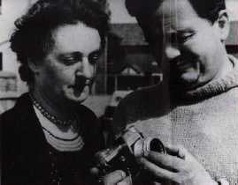

"Jim" Templeton . Il devient pompier à Cumbria (Angleterre).
Le (dimanche 24?), part pique-niquer avec sa femme et sa fille Elizabeth (5 ans) dans une
zone de verdure populaire non loin du marais Burgh près de Carlisle.
Ce jour-là Templeton ressent de l'électricité" dans l'air, comme celle qu'on sent avant un orage. Normalement, vaches
et moutons devraient gambader dans le grand pré, mais ils sont tous rassemblés à l'extrêmité éloignée du champ, comme
s'ils avaient peur de quelque chose.
A côté d'eux 3, les seules personnes en vue sont 2 femmes âgées dans une voiture, à 400 yards environ de l'endroit
de leur pique-nique.
James Templeton, sa femme et l'appareil qu'il utilisa

Templeton est photographe amateur, et lorsque sa fille rassemble quelques fleurs, il se saisit de son appareil photo
reflex monoobjectif (SLR), chargé de la nouvelle pellicule Kodacolor pour en prendre 3 clichés.
Il donne sa pellicule à développer chez Kodak, et qu'elle n'est pas sa surprise à la livraison des tirages de voir
sur la 2ᵉ photo, derrière sa petite fille, ce qui semble être un humanoïde en combinaison.
Templeton déclare avoir reçu peu après la visite de 2 hommes
vêtus de noir, dans une Jaguar noire. Ils étaient étranges et posaient des questions bizarres. Ils prétendaient
appartenir à un service officiel. Je les ai accompagnés en voiture jusqu'au marais, mais ils devinrent très agités
lorsque je leur dis que je n'avais vu personne au moment de prendre la photo. Ils partirent en me laissant seul, à 8
km de chez moi. Je n'entendis plus jamais parler d'eux.
Enquêtes
Certains avancent que le personnage flotte dans les airs, mais on s'aperçoit que, rapporté à la taille d'un homme,
il toucherait normalement le sol.
Un autre point troublant est le bras du personnage, et plus précisément ce qui semble être son coude, qui semble
indiquer que le personnage est en fait de dos, contrairement à ce que sa "visière" laisse supposer.
La femme de Templeton à droite
En fait, il se révèlera que le personnage n'est autre que la femme de templeton, en robe claire, surexposée et dont
les cheveux portaient un fichu blanc à leur sommet donnent l'impression d'une zone blanche puis d'une zone noire. On
distingue aussi son sol et la limite de la robe et ses bras nus. Templeton n'avait pas remarqué sa femme parce que
la vision avant la prise de photo est limitée à 70% de la photo finale.